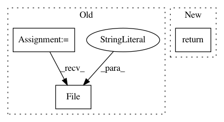

77820294086e9f63a002b588f8be6e3ad1de079c,ilastik/applets/dataSelection/opDataSelection.py,DatasetInfo,getPossibleInternalPaths,#DatasetInfo#,228
Before Change
def getPossibleInternalPaths(self):
assert self.isHdf5()
datasetNames = []
with h5py.File(self.externalPath, "r") as f:
def accumulateDatasetPaths(name, val):
if type(val) == h5py._hl.dataset.Dataset and 3 <= len(val.shape) <= 5:
datasetNames.append( "/" + name )
After Change
def getPossibleInternalPaths(self):
assert self.fileHasInternalPaths(self.externalPath)
return self.getPossibleInternalPathsFor(self.externalPath)
@property
def datasetId(self):
return self._datasetId
In pattern: SUPERPATTERN
Frequency: 3
Non-data size: 3
Instances
Project Name: ilastik/ilastik
Commit Name: 77820294086e9f63a002b588f8be6e3ad1de079c
Time: 2019-06-21
Author: tomaz.vieira@embl.de
File Name: ilastik/applets/dataSelection/opDataSelection.py
Class Name: DatasetInfo
Method Name: getPossibleInternalPaths
Project Name: ilastik/ilastik
Commit Name: 630a400af2bffc27a173acf876d72a1a10cd2dbf
Time: 2014-05-08
Author: bergs@janelia.hhmi.org
File Name: ilastik/applets/base/appletSerializer.py
Class Name: SerialClassifierSlot
Method Name: _deserialize
Project Name: pyannote/pyannote-audio
Commit Name: 492ab3938973c77667f641d0a284532c1ecc8727
Time: 2017-12-15
Author: bredin@limsi.fr
File Name: pyannote/audio/features/utils.py
Class Name: Precomputed
Method Name: __call__